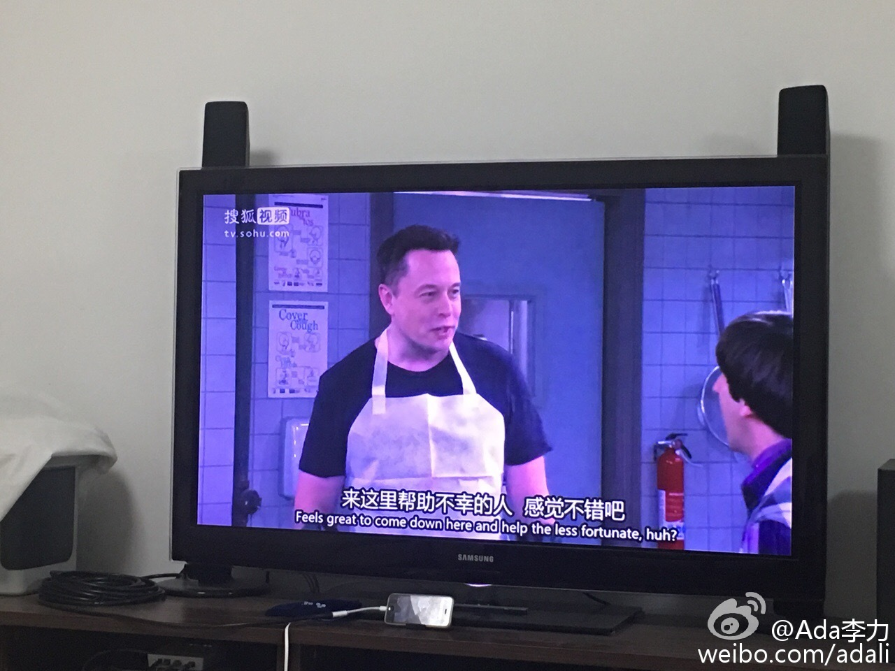

被引用最多的台词：“人穷尽一生追寻另一个人类，共度一生的事，我一直无法理解。或许我自己太有意思，无需他人陪伴，所以，我祝你们在对方身上得到的快乐，与我给自己的一样多。——谢尔顿”@Ada李力:《生活大爆炸》第九季感觉比前几季都好看，也许是蛮长时间没看美剧的缘故。Elon Mask在里面扮演自己，还是惊讶一下。 
明俊又在餐桌上叨叨#姣姣#，说她没有学习目标。我对明俊说大家都有目标，我有，姣姣也有，你的目标是不是也定一个，比如成为年薪百万的奥数老师。明俊说：“我的目标是把姣姣的学习搞好” 我说：“每个人设定的目标不能把希望寄托在别人身上”。姣姣说：“对！！！”